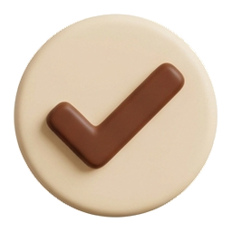

9:41
Bomdodda o'rningizdan turishga majbur qiladi
Oddiy budilnikni yotgan joyda o'chirib yuborasiz. Bu boshqacha ishlaydi.
Ovoz asta-sekin kuchayadi. Ekranda bitta tugma.
Joynamozni kameraga ko'rsatasiz — buning uchun o'rningizdan turishingiz kerak.

Signal to'xtaydiEndi siz oyoqdasiz. Qolgani sizga bog'liq.
Ilova buyumni ko'rganini tasdiqlaydi, namoz o'qiganingizni emas. Zarur bo'lsa signalni 10 soniya bosib turib o'chirasiz.